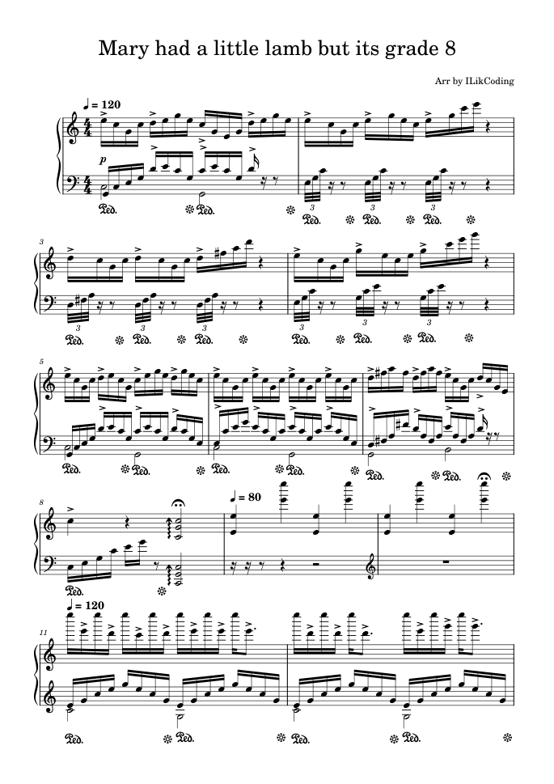
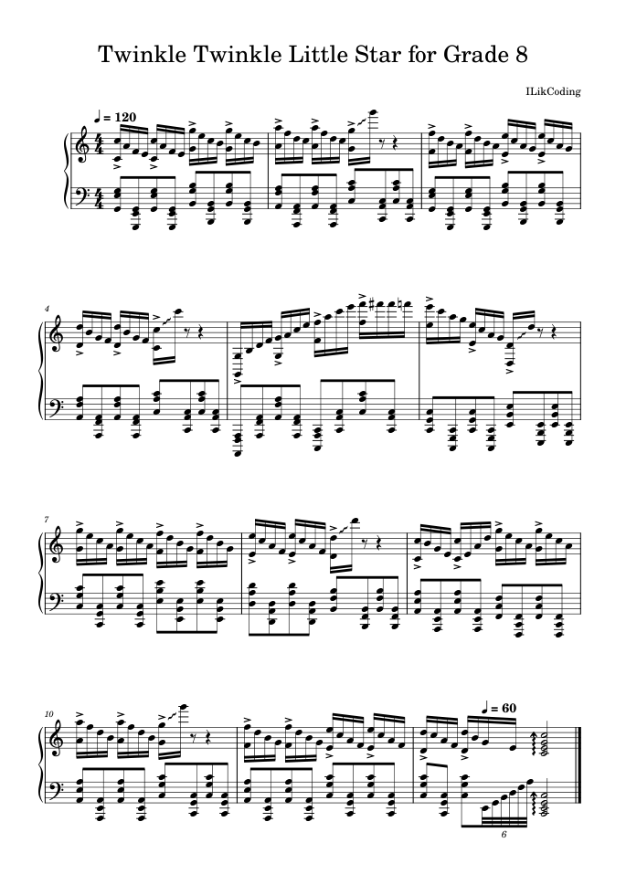
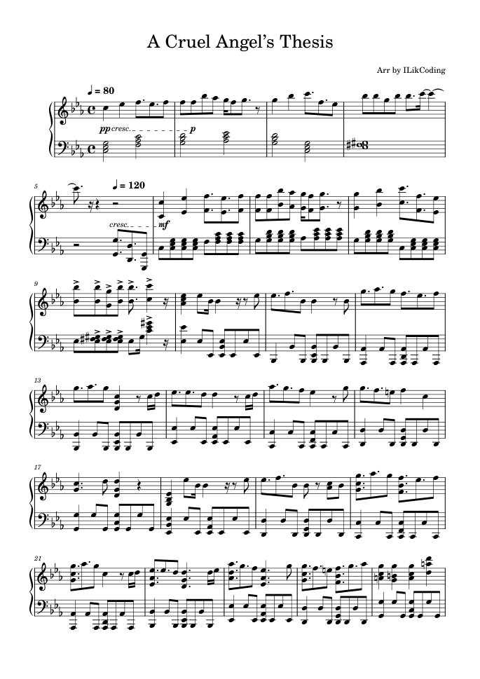
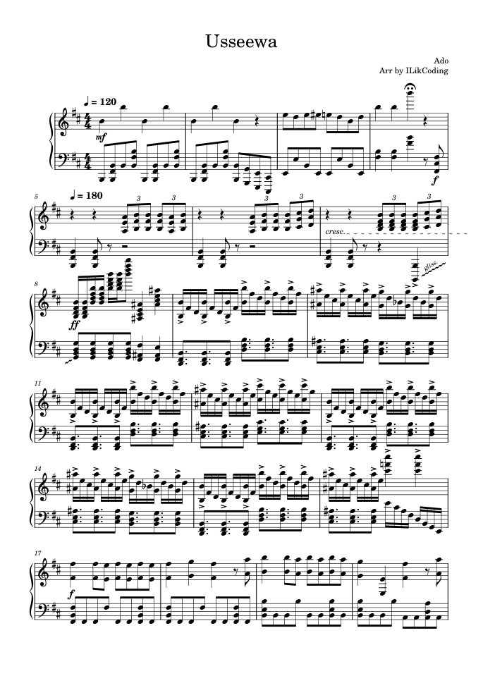
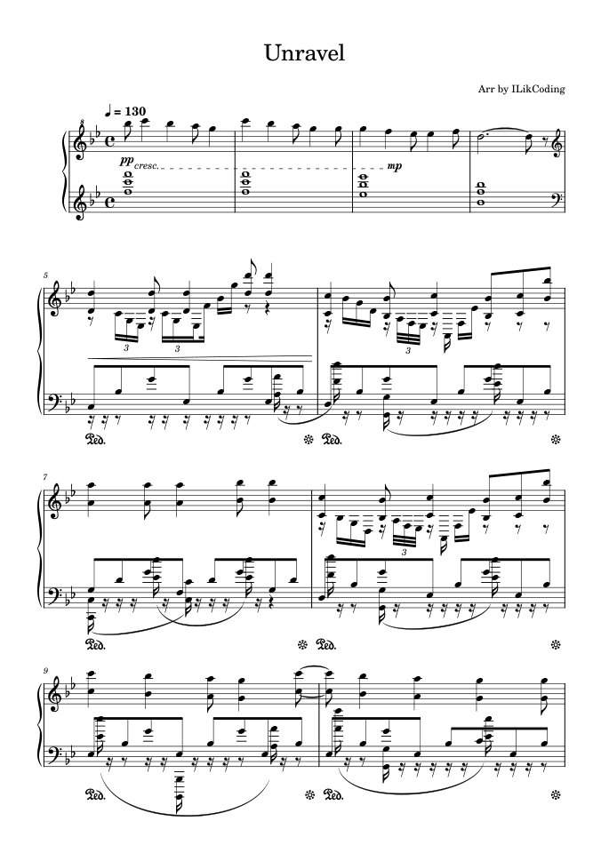
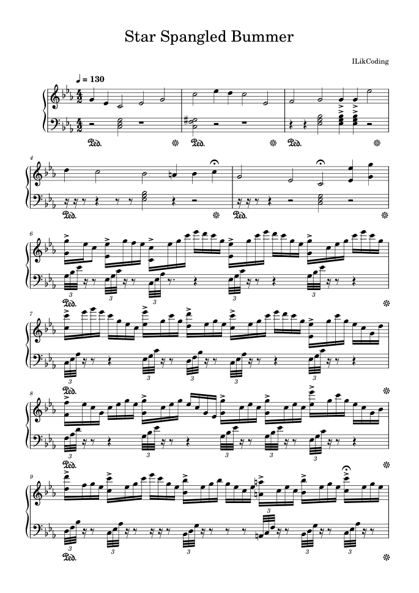
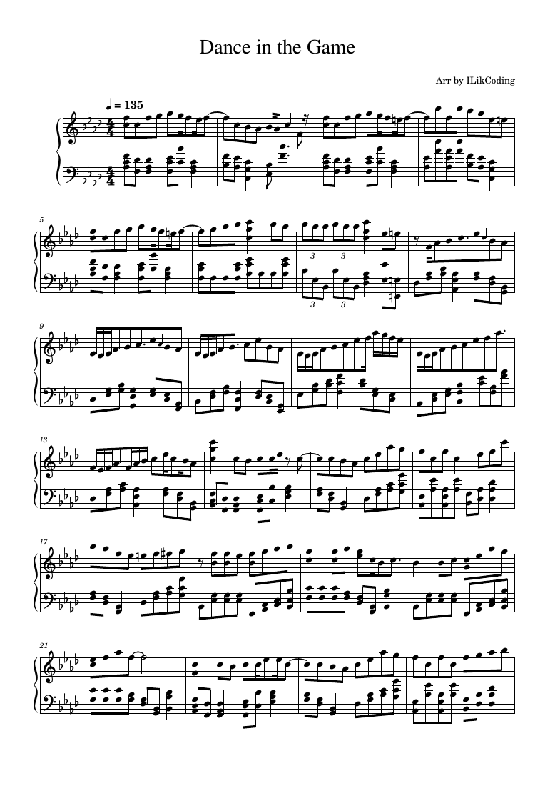

Mary Had a Little Lamb for Grade 8
A familiar melody taken considerably further.
My original piano arrangements of anime openings, J-POP and more!

A familiar melody taken considerably further.

A childhood tune, reimagined for the piano.

A piano arrangement of the iconic opening.




My piano arrangement of the Classroom of the Elite Season 2 opening.
Original arrangements of existing songs are credited to their original creators. Copyright and distribution rights remain with their respective owners.